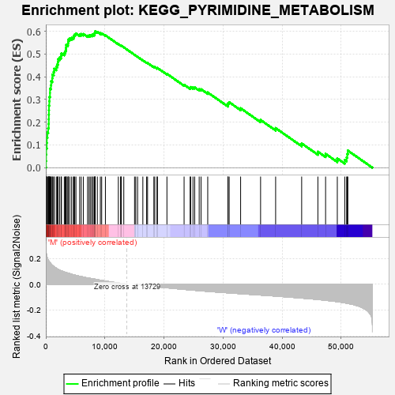
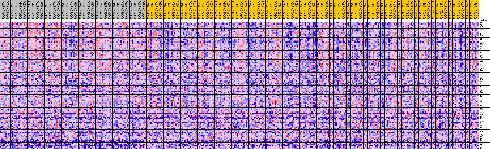
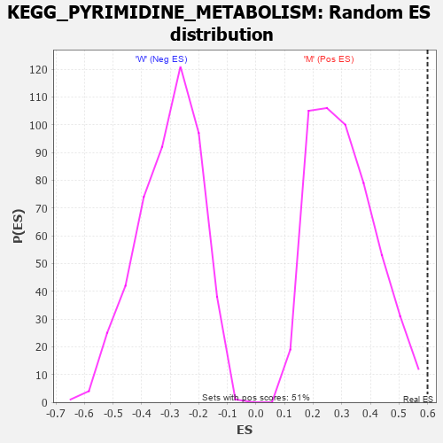

| Dataset | MUC16.MUC16.cls#M_versus_W.MUC16.cls#M_versus_W_repos |
| Phenotype | MUC16.cls#M_versus_W_repos |
| Upregulated in class | M |
| GeneSet | KEGG_PYRIMIDINE_METABOLISM |
| Enrichment Score (ES) | 0.59999907 |
| Normalized Enrichment Score (NES) | 1.957793 |
| Nominal p-value | 0.001980198 |
| FDR q-value | 0.045839593 |
| FWER p-Value | 0.109 |

| PROBE | DESCRIPTION (from dataset) | GENE SYMBOL | GENE_TITLE | RANK IN GENE LIST | RANK METRIC SCORE | RUNNING ES | CORE ENRICHMENT | |
|---|---|---|---|---|---|---|---|---|
| 1 | RRM2 | na | 27 | 0.262 | 0.0295 | Yes | ||
| 2 | NME1-NME2 | na | 47 | 0.251 | 0.0579 | Yes | ||
| 3 | TYMS | na | 65 | 0.242 | 0.0853 | Yes | ||
| 4 | POLR1B | na | 153 | 0.219 | 0.1087 | Yes | ||
| 5 | DCK | na | 166 | 0.215 | 0.1331 | Yes | ||
| 6 | POLR2B | na | 267 | 0.202 | 0.1544 | Yes | ||
| 7 | POLR2A | na | 392 | 0.188 | 0.1736 | Yes | ||
| 8 | POLE2 | na | 480 | 0.181 | 0.1927 | Yes | ||
| 9 | PNP | na | 499 | 0.179 | 0.2129 | Yes | ||
| 10 | TK1 | na | 508 | 0.179 | 0.2332 | Yes | ||
| 11 | POLD2 | na | 521 | 0.178 | 0.2534 | Yes | ||
| 12 | NME6 | na | 533 | 0.177 | 0.2734 | Yes | ||
| 13 | CAD | na | 590 | 0.173 | 0.2922 | Yes | ||
| 14 | RRM1 | na | 614 | 0.172 | 0.3115 | Yes | ||
| 15 | PNPT1 | na | 707 | 0.166 | 0.3289 | Yes | ||
| 16 | POLR3G | na | 709 | 0.166 | 0.3479 | Yes | ||
| 17 | UMPS | na | 868 | 0.157 | 0.3630 | Yes | ||
| 18 | CTPS1 | na | 907 | 0.155 | 0.3800 | Yes | ||
| 19 | POLR2D | na | 1096 | 0.146 | 0.3933 | Yes | ||
| 20 | POLR3H | na | 1107 | 0.146 | 0.4099 | Yes | ||
| 21 | POLR3C | na | 1331 | 0.137 | 0.4215 | Yes | ||
| 22 | POLA2 | na | 1420 | 0.134 | 0.4352 | Yes | ||
| 23 | DCTD | na | 1768 | 0.123 | 0.4430 | Yes | ||
| 24 | PRIM2 | na | 1923 | 0.119 | 0.4538 | Yes | ||
| 25 | POLR3B | na | 2050 | 0.115 | 0.4646 | Yes | ||
| 26 | POLE | na | 2065 | 0.115 | 0.4775 | Yes | ||
| 27 | PRIM1 | na | 2340 | 0.109 | 0.4850 | Yes | ||
| 28 | CANT1 | na | 2591 | 0.104 | 0.4923 | Yes | ||
| 29 | POLR1A | na | 2645 | 0.103 | 0.5031 | Yes | ||
| 30 | DTYMK | na | 3125 | 0.094 | 0.5052 | Yes | ||
| 31 | CMPK1 | na | 3287 | 0.092 | 0.5128 | Yes | ||
| 32 | POLR3K | na | 3399 | 0.090 | 0.5211 | Yes | ||
| 33 | POLR1E | na | 3433 | 0.090 | 0.5308 | Yes | ||
| 34 | POLE3 | na | 3467 | 0.089 | 0.5405 | Yes | ||
| 35 | POLR3A | na | 3736 | 0.086 | 0.5454 | Yes | ||
| 36 | NT5C3A | na | 3781 | 0.085 | 0.5543 | Yes | ||
| 37 | ENTPD4 | na | 3800 | 0.084 | 0.5636 | Yes | ||
| 38 | RRM2B | na | 4053 | 0.081 | 0.5683 | Yes | ||
| 39 | ENTPD6 | na | 4368 | 0.077 | 0.5715 | Yes | ||
| 40 | POLR2E | na | 4668 | 0.073 | 0.5744 | Yes | ||
| 41 | NT5M | na | 4758 | 0.072 | 0.5810 | Yes | ||
| 42 | TYMP | na | 4897 | 0.070 | 0.5866 | Yes | ||
| 43 | POLR2C | na | 5100 | 0.068 | 0.5907 | Yes | ||
| 44 | CMPK2 | na | 5727 | 0.062 | 0.5864 | Yes | ||
| 45 | NUDT2 | na | 5996 | 0.059 | 0.5883 | Yes | ||
| 46 | POLA1 | na | 6362 | 0.055 | 0.5879 | Yes | ||
| 47 | POLD1 | na | 7067 | 0.048 | 0.5807 | Yes | ||
| 48 | NT5E | na | 7319 | 0.046 | 0.5815 | Yes | ||
| 49 | POLD3 | na | 7521 | 0.045 | 0.5830 | Yes | ||
| 50 | DPYD | na | 7784 | 0.043 | 0.5831 | Yes | ||
| 51 | POLR3D | na | 7885 | 0.042 | 0.5861 | Yes | ||
| 52 | DUT | na | 8147 | 0.040 | 0.5860 | Yes | ||
| 53 | TXNRD2 | na | 8265 | 0.039 | 0.5883 | Yes | ||
| 54 | UPB1 | na | 8269 | 0.039 | 0.5927 | Yes | ||
| 55 | NT5C2 | na | 8338 | 0.038 | 0.5959 | Yes | ||
| 56 | POLR1C | na | 8352 | 0.038 | 0.6000 | Yes | ||
| 57 | UPP1 | na | 8718 | 0.035 | 0.5974 | No | ||
| 58 | TK2 | na | 9231 | 0.031 | 0.5917 | No | ||
| 59 | TXNRD1 | na | 9457 | 0.029 | 0.5909 | No | ||
| 60 | UCK2 | na | 10086 | 0.024 | 0.5823 | No | ||
| 61 | UCKL1 | na | 12274 | 0.009 | 0.5437 | No | ||
| 62 | UCK1 | na | 12657 | 0.007 | 0.5375 | No | ||
| 63 | ITPA | na | 12725 | 0.006 | 0.5370 | No | ||
| 64 | POLR3F | na | 12755 | 0.006 | 0.5372 | No | ||
| 65 | NME1 | na | 13199 | 0.003 | 0.5295 | No | ||
| 66 | POLR2H | na | 15019 | -0.000 | 0.4966 | No | ||
| 67 | DHODH | na | 15221 | -0.001 | 0.4930 | No | ||
| 68 | POLE4 | na | 15533 | -0.002 | 0.4877 | No | ||
| 69 | POLR2L | na | 16423 | -0.007 | 0.4724 | No | ||
| 70 | POLR3GL | na | 17057 | -0.011 | 0.4621 | No | ||
| 71 | POLR2J2 | na | 17220 | -0.012 | 0.4605 | No | ||
| 72 | CTPS2 | na | 18288 | -0.017 | 0.4431 | No | ||
| 73 | NME2 | na | 18443 | -0.018 | 0.4424 | No | ||
| 74 | CDA | na | 18819 | -0.020 | 0.4378 | No | ||
| 75 | ENTPD3 | na | 18894 | -0.020 | 0.4388 | No | ||
| 76 | AK3 | na | 20498 | -0.027 | 0.4129 | No | ||
| 77 | POLR2G | na | 23404 | -0.040 | 0.3648 | No | ||
| 78 | ENTPD8 | na | 24426 | -0.044 | 0.3513 | No | ||
| 79 | ZNRD1 | na | 24520 | -0.044 | 0.3547 | No | ||
| 80 | POLR2I | na | 24908 | -0.046 | 0.3529 | No | ||
| 81 | POLR2K | na | 25197 | -0.047 | 0.3531 | No | ||
| 82 | NME7 | na | 25959 | -0.050 | 0.3450 | No | ||
| 83 | ENTPD5 | na | 26271 | -0.051 | 0.3451 | No | ||
| 84 | POLR1D | na | 27405 | -0.055 | 0.3309 | No | ||
| 85 | NT5C1B | na | 30819 | -0.067 | 0.2767 | No | ||
| 86 | NT5C1A | na | 30840 | -0.067 | 0.2839 | No | ||
| 87 | NT5C | na | 31035 | -0.067 | 0.2881 | No | ||
| 88 | POLD4 | na | 32971 | -0.073 | 0.2614 | No | ||
| 89 | NME3 | na | 36349 | -0.084 | 0.2098 | No | ||
| 90 | UPRT | na | 38897 | -0.092 | 0.1741 | No | ||
| 91 | ENTPD1 | na | 43303 | -0.107 | 0.1065 | No | ||
| 92 | NME5 | na | 46048 | -0.118 | 0.0703 | No | ||
| 93 | DPYS | na | 47352 | -0.124 | 0.0608 | No | ||
| 94 | POLR2J | na | 49336 | -0.135 | 0.0404 | No | ||
| 95 | UPP2 | na | 50596 | -0.144 | 0.0340 | No | ||
| 96 | POLR2F | na | 50914 | -0.147 | 0.0450 | No | ||
| 97 | POLR2J3 | na | 51012 | -0.147 | 0.0601 | No | ||
| 98 | NME4 | na | 51118 | -0.148 | 0.0752 | No |

